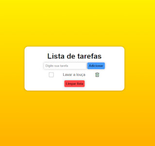
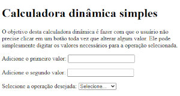
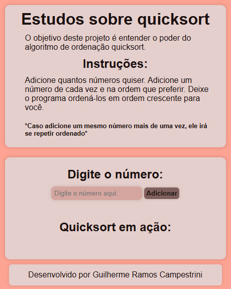

Projetos pessoais
Ainda não possuo experiência profissional na área, porém busco sempre me desafiar e colocar em prática o que vou aprendendo com projetos pessoais.
To-Do List
Meu último projeto antes de dar início à um curso mais completo de JavaScript.
Calculadora Dinâmica
Primeiro projeto feito durante a graduação em Análise e Desenvolvimento de Sistemas.
Quicksort
Durante a leitura do livro: Entendendo algoritmos - Um guia ilustrado para programadores e outros curiosos, de Aditya Y. Bhargava, quis colocar em prática como o algoritmo quicksort funciona.
Outros
Realizei projetos menores apenas para colocar em prática o que foi sendo estudado.